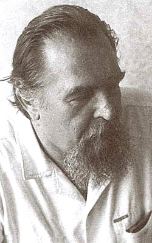

Работы А. М. Панченко
|  | Панченко Александр Михайлович (25 февраля 1937, г.
Ленинград ≈ 29 мая 2002, г. Санкт-Петербург), академик РАН по Секции гуманитарных и общественных наук (русская литература) с 7 декабря 1991
г., лауреат Государственной премии РФ (1995),
Президент Фонда Л.Н. Гумилева
(1992≈2002).
В 1953 году поступил на филологический факультет Ленинградского государственного университета, где учился одновременно на двух отделениях ≈ чешском и русском. В 1957 году был направлен на учебу в Карлов университет (Чехословакия), который окончил в 1958 году и поступил в аспирантуру ИРЛИ. Работал в ИРЛИ младшим, старшим, ведущим научным сотрудником, с 1978 года ≈ заведующим сектором по изучению литературы XVIII века, с 1988 года ≈ заведующим отделом новой русской литературы ИРЛИ. В 1964 году защитил кандидатскую диссертацию по чешско-русским литературным связям XVII века, в 1973 году ≈ докторскую диссертацию по русской стихотворной культуре XVII века. |
Автор научных трудов по проблемам древнерусской литературы ("Смеховой мир древней Руси", 1976, в соавторстве с академиком Д.С. Лихачевым), по русской культуре XVIII века ("Русская культура в канун Петровских реформ", 1984), книги "Чтобы свеча не погасла" (1990), написанной в соавторстве с Л.Н. Гумилевым, и многих других исследований, затрагивающих сложные и спорные вопросы истории, литературы, культуры, особенно в переломные периоды. Занимался археографией, собиранием древнерусских рукописей. Многие книги и статьи переведены в Болгарии, Венгрии, Польше, Чехословакии, Италии, Англии, Германии и Японии. Вел и ведет преподавательскую работу в вузах Санкт-Петербурга и стран Европы. Автор историко-литературных фильмов и телепередач.
 Работы и
интервью
Работы и
интервью 
-
 "Чтобы свеча не погасла: Диалог"
(25/02/07)
"Чтобы свеча не погасла: Диалог"
(25/02/07)
[Диалог любезно предоставлен Общественной организацией "Фонд Л. Н. Гумилева".]- Беседа Л. Н. Гумилев с А. М. Панченко (1990).
[Интервью любезно предоставлено Общественной организацией "Фонд Л. Н. Гумилева".]
- Л. Н. Гумилев ведет беседу с А. М. Панченко и К. П. Ивановым.
опубликовано // Литературная учеба, 1991 г. ?
- Невское время No 179 (1582) 2 октября 1997 г.
- Невское время No 188(1591) 15 октября 1997 г.
- Адрес в Интернета - http://ikorkin3.narod.ru/stish3.html#panch
- Известия 21 декабря 2000 г. ╧ 240 (25832).
- Известия 2 июня 2002 г.
- Учение Л.Н. Гумилева и современность: Материалы Международной конференции, посвященной 90-летию со дня рождения Л.Н. Гумилева: /В 2 т./ /СПбГУ; Редкол.: Л.А. Вербицкая (гл. ред.) и др.- СПб., НИИХимииСПбГУ, 2002.- Т. 1.
Эта страница была последний раз обновлена 05/20/08